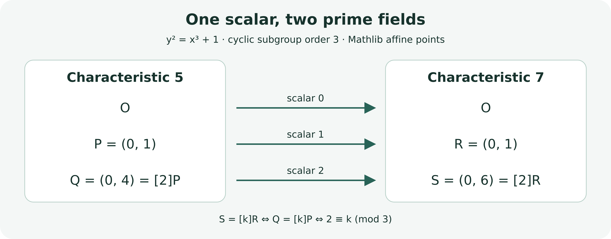

The curve y² = x³ + 1 over the prime fields of characteristics 5 and 7 has the chosen points P = (0,1) and R = (0,1), respectively. The Lean module checks their nonsingularity, doubling equations and order 3. [pcc:unverified]

Scalar endpoint. For every integer k, the target equation S = [k]R holds exactly when the source equation Q = [k]P holds; both read 2 ≡ k (mod 3). The subgroup table is exhaustive. [pcc:unverified]
Mathlib supplies the affine-point abelian group. Its
addEquivOfAddOrderOfEq constructs the subgroup isomorphism from
the equal-order generator obligations. The existing scalar law and
injectivity supply preservation and reflection of the scalar equation.
No generic group law is reimplemented.
The transfer is an abstract subgroup isomorphism, defined using classical choice of scalar representatives. It is not a morphism between the base fields or an algebraic isogeny, and this definition supplies no general efficient evaluator. The example includes the obstruction to a unital field map from characteristic 5 to characteristic 7. [pcc:unverified]
Use Lean 4.24.0 and the dependency revisions in lake-manifest.json.
Run lake build and lake env lean AxiomAudit.lean.
The repository gate and its raw build/audit receipts are included in the
example directory. The proof map lists each obligation and inherited law.